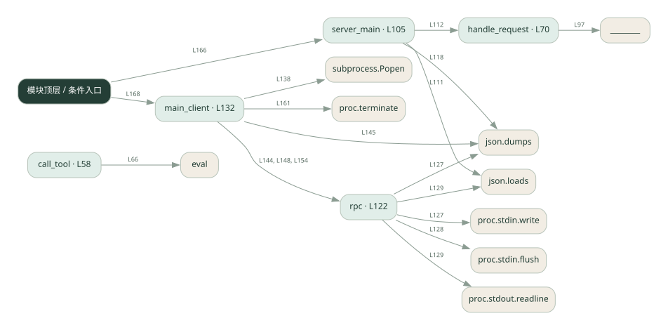

3-3 · 全课程第 43 节
MCP 工具通信入门
040.py
源码快照 25d618851cf0 · 静态解析 · 2026-09-10
01 / 要完成的事
客户端启动子进程，用标准输入输出传 JSON-RPC 请求，服务端列出并执行工具。
02 / 为什么要做
工具可以运行在独立进程，双方需要约定请求和响应格式。
03 / 当前代码状态
同一个脚本分客户端与 --server 两种入口，通过子进程标准输入输出通信。请求分发仍有填空；协议教学代码不能直接认定为完整 MCP 服务。
仍有下划线占位表达式，源文件行号：87, 97, 99, 158。相应路径在补完前不能正常执行。
源码存在 eval 调用。请先看表达式限制条件；调用图只能说明它被使用，不能证明输入已被安全限制。
主要展示本地计算、内存状态或模拟流程；是否写文件/启动子进程请看调用表。 本次只做静态解析，没有运行练习，也没有替你填写或修改原代码。
04 / 调用图
打开大图 ↗实线：源码中的直接调用；虚线：函数引用/注册、动态调用或按方法名推断的候选。L 是调用所在源码行号。箭头不表示执行顺序或每次必经；分支、循环、异步调度及框架内部调用需结合源码。灰色是外部/未解析目标，橙色是动态分发；省略 print、len 和常规容器操作以减少干扰。孤立函数可能尚未接入。

先从 模块入口 出发，沿箭头找到本文件函数，再查看外部调用或动态分发。右侧调用清单保留所有静态调用点，能回到原文件逐行对照。
05 / 函数定位
| 函数 / 定义行 | 职责（源码注释） | 内部调用 |
|---|---|---|
call_toolL58 | 真正执行工具（这是 server 的核心逻辑） | set, any, str, eval |
handle_requestL70 | 按 method 分发，返回 result（这就是 MCP 的「协议处理」） | req.get, ________.items, ________ |
server_mainL105 | server 主循环：从 stdin 逐行读 JSON 请求，往 stdout 逐行写 JSON 响应 | line.strip, json.loads, handle_request, req.get, print, json.dumps |
rpcL122 | 发一个 JSON-RPC 请求，收一个响应 | proc.stdin.write, json.dumps, proc.stdin.flush, json.loads, proc.stdout.readline |
main_clientL132 | 以源码函数体为准；下列调用展示其依赖。 | print, subprocess.Popen, rpc, json.dumps, proc.terminate |
这样做的优点
模型侧和工具实现可以分离，协议内容可直接观察。
代价与局限
这是协议子集教学实现；不能据此认定完整兼容、可靠并发或具备安全隔离。
适用场景
理解 stdio 与工具发现、工具调用的关系。
不宜直接照搬
直接作为面向不可信客户端的公共工具服务。
动手检验理解
请求一个不存在的工具，观察响应 id 与错误内容是否能对应请求。
有未实现位置时先预测，再补齐验证。能启动不等于逻辑正确。
查看全部 33 个静态调用 / 引用点
| 调用方 | 目标 | 源码行 | 类型 |
|---|---|---|---|
| call_tool | set | 63 | 调用 |
| call_tool | any | 64 | 调用 |
| call_tool | str | 66 | 调用 |
| call_tool | eval | 66 | 调用 |
| handle_request | req.get | 72 | 调用 |
| handle_request | ________.items | 87 | 调用 |
| handle_request | ________ | 97 | 调用 |
| server_main | line.strip | 108 | 调用 |
| server_main | json.loads | 111 | 调用 |
| server_main | handle_request | 112 | 调用 |
| server_main | req.get | 113 | 调用 |
| server_main | print | 118 | 调用 |
| server_main | json.dumps | 118 | 调用 |
| rpc | proc.stdin.write | 127 | 调用 |
| rpc | json.dumps | 127 | 调用 |
| rpc | proc.stdin.flush | 128 | 调用 |
| rpc | json.loads | 129 | 调用 |
| rpc | proc.stdout.readline | 129 | 调用 |
| main_client | print | 133 | 调用 |
| main_client | print | 134 | 调用 |
| main_client | print | 135 | 调用 |
| main_client | subprocess.Popen | 138 | 调用 |
| main_client | rpc | 144 | 调用 |
| main_client | print | 145 | 调用 |
| main_client | json.dumps | 145 | 调用 |
| main_client | rpc | 148 | 调用 |
| main_client | print | 149 | 调用 |
| main_client | print | 151 | 调用 |
| main_client | rpc | 154 | 调用 |
| main_client | print | 159 | 调用 |
| main_client | proc.terminate | 161 | 调用 |
| <模块入口> | server_main | 166 | 调用 |
| <模块入口> | main_client | 168 | 调用 |